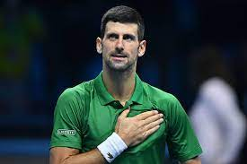
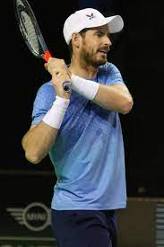
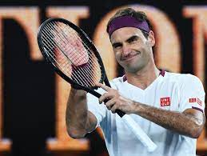

RAFAEL NADAL
Bienvenidos a El rey de la tierra

Dueño del polvo de ladrillo
Mallorca, España
3 de junio de 1986, Tenista profesional
.jpg)
Está considerado como el mejor tenista de la historia en tierras batidas! Es el tenista masculino más joven de la historia en conseguir el Golden Slam en la carrera, que consiste en lograr los cuatro Grand Slam y la medalla de oro en los Juegos Olímpicos a lo largo de la carrera, logro únicamente compartido con Andre Agassi. Es, junto a Novak Djokovic, uno de los dos tenistas masculinos en toda la Era Abierta en conseguir el Doble Grand Slam en carrera, que consiste en ganar, al menos dos veces, cada uno de los cuatro Grand Slam a lo largo de la carrera. Además, ambos tenistas son los únicos que han sido capaces de ganar en un mismo año (2010 y 2021) tres Grand Slams en tres superficies distintas.
Jugador con mas titulos en tierra batida
63 titulos en toda la era abierta
Rafael dejando hasta la ultima gota de sudor
Es el tenista español con el mayor número de títulos individuales (92, superando a Manuel Orantes y a Conchita Martínez, con 33), más títulos de Grand Slam (22, superando a Manolo Santana y a Arantxa Sánchez Vicario, con 4), más títulos de Masters 1000 (36, superando a Conchita Martínez, con 9) y con más semanas en el número uno del ranking mundial de la ATP, con 209. Es el único tenista en la historia en ser número uno en tres décadas diferentes: 2000, 2010 y 2020.


Roland Garros
El tenista que mas veces lo ha conseguido en la historia
TITULOS
-
 Grand Slam
Grand Slam
22 titulos -
 Masters 1000
Masters 1000
36 titulos -
Wimbledon
2 titulos -
 Davis Cup
Davis Cup
5 titulos
Tags
Disciplina Rafa España Tenis Mallorca Ganador Entrenamiento Crack Polvo de ladrillo Sacrificio Amor Lesiones Talento Raqueta
Mejores rivales



Follow Me
Subscribe
Enter your e-mail below and get notified on the latest blog posts.